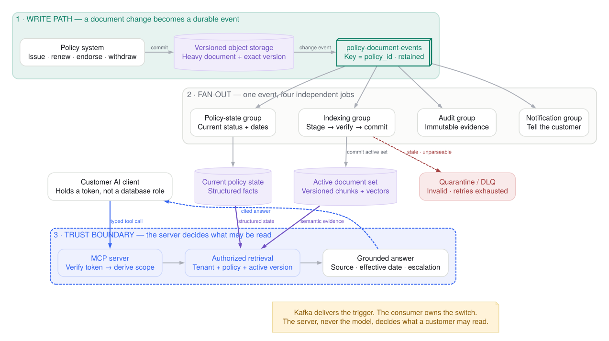
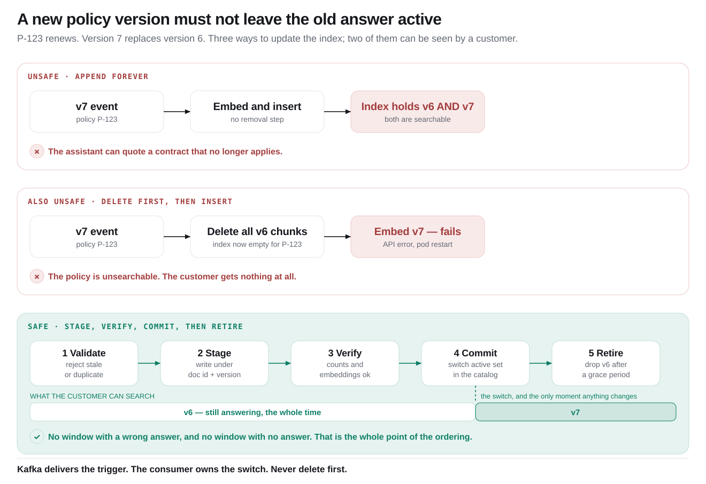
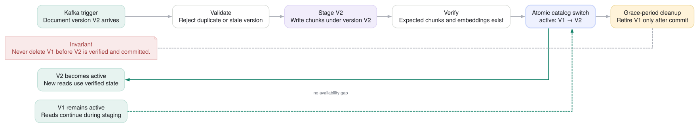
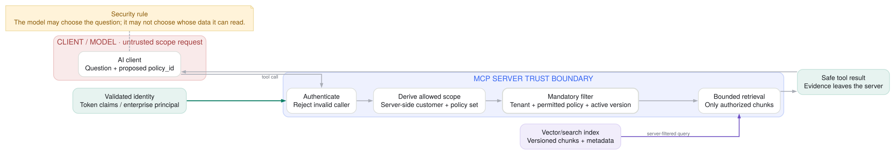

Capture the change
A new policy, renewal, endorsement, replacement, or deletion arrives.
MSDS 682 · Lecture 8 · Part 2
Insurance documents with S3, Kafka, embeddings, vector search, RAG, and MCP.
The question for today
A new policy, renewal, endorsement, replacement, or deletion arrives.
Fetch, validate, chunk, embed, activate the new version, and retire stale state.
An AI client calls an MCP tool that retrieves only the documents the user may access.
Two paths, one system

Lecture 8 overview
Project scope
| Required | Optional | Still the grading center |
|---|---|---|
| One AI step with defined input, output, verification, and fallback | RAG, MCP, agents, multiple models, or a production vector platform | Kafka contracts, topics, processing, state, time, recovery, output, and evidence |
Architecture judgment
Ask the sharp question
Good when one small team owns one consumer, traffic is light, and custom backfill is acceptable.
Useful when the change is durable shared history for multiple independently operated jobs.
Kafka's value in this project
Embedding, audit, fraud, structured extraction, and notifications consume the same change event.
Five thousand documents may arrive now while the embedding service processes one hundred per second.
A new embedding model, bug fix, or compliance rule can rebuild derived state without changing the source.
Choose the interaction model
| Need | Default shape | Example |
|---|---|---|
| A user waits for an immediate answer | HTTP / RPC / streamed response | Question → MCP tool → answer |
| One asynchronous job must be completed | Task queue or Kafka Share Groups where supported | Process one document with one worker |
| One event supports many retained uses | Kafka topic + separate consumer groups | Embedding + audit + fraud + analytics |
Message design
Simple for tiny text files and low volume, but large payloads amplify network, replication, retention, and consumer fetch costs.
Store the file in S3. Publish bucket, object key, object version, checksum, and business metadata.
Maintain knowledge
The running example
A customer receives a new contract.
A new version supersedes the earlier policy.
A document supplements—not always replaces—the base contract.
A document or access grant is removed.
Write path overview
S3 identity
It expires, carries temporary access, and makes replay depend on yesterday's credential.
The consumer authenticates with its own role and reads the exact S3 object version referenced by the event.
Event contract
{
"event_id": "evt-7e91",
"tenant_id": "insurer-us",
"policy_id": "P-123",
"document_id": "D-789",
"document_role": "BASE_POLICY",
"document_version": 7,
"operation": "REPLACE",
"supersedes_document_id": "D-654",
"bucket": "insurance-documents",
"object_key": "policies/P-123/v7.pdf",
"object_version_id": "3HL4...",
"checksum": "sha256:...",
"effective_at": "2026-08-01T00:00:00Z",
"occurred_at": "2026-07-30T21:04:00Z",
"source_sequence": "00000000000007"
}
policy_id. Use an explicit business version and document role. Prefer opaque internal identifiers and keep raw PII out of the event when it is not required.How the Kafka event starts
Write the object first. Then commit document metadata and an outbox row in one database transaction; CDC or a relay publishes the Kafka domain event.
Useful for simpler ingestion, but the bridge must enrich the storage event with policy semantics such as REPLACE versus AMEND and run reconciliation for missed work.
Ordering
policy_id.All changes for one policy are stored in one partition.document_version in the consumer.A delayed source notification must never overwrite a newer active version.Fan-out
policy_idConsumer vocabulary
| Design need | Correct Kafka design |
|---|---|
| Five embedder instances share load | One embedding consumer group with five instances |
| Embedding and audit each need every event | Two different consumer groups |
| Two steps deploy and fail together | They may be one coherent consumer application |
| Two steps scale or release independently | Keep them in separate applications and groups |
Embedding consumer
No new Kafka operations
Unsupported type, failed checksum, unauthorized source, or obsolete version.
Parse, clean, chunk, embed, and attach metadata.
Indexing rate, error rate, freshness, cost, and chunks per document.
Join a document with policy status, authorization scope, or feedback.
P0 correctness

Safe update pattern

Replay
Use a new consumer group or reset offsets, then write vectors under a new embedding version.
If Kafka retention no longer covers the history, rebuild from S3 inventory or a current-document metadata table.
Serving layer
Read path overview
search_policySeparate the abstractions
| Concept | What it is | In this project |
|---|---|---|
| RAG | A pattern: retrieve relevant context, then generate an answer | Search active policy chunks and ground the response |
| MCP | An interface protocol for tools and capabilities | Expose search_policy to an AI client |
| Vector database | A serving store / index | Find semantically similar authorized chunks |
| Kafka | A durable event backbone | Maintain the change history that keeps the index fresh |
MCP tool contract
{
"name": "search_policy",
"description": "Search the caller's active insurance documents.",
"inputSchema": {
"type": "object",
"properties": {
"question": { "type": "string" },
"policy_id": { "type": "string" },
"top_k": { "type": "integer", "maximum": 8 }
},
"required": ["question", "policy_id"]
}
}
policy_id is still rejected when the authenticated caller may not access it.P0 security

Choose the serving store
Policy status, premium, active version, latest claim status, or model metrics.
Use: an authoritative API or current-state table with deterministic filters.
Coverage language, exclusions, endorsements, letters, and policy clauses.
Use: chunking, embeddings, vector search, and RAG.
Return to real time
Evidence and limits
Correctness checklist
| Failure | Required response | Evidence |
|---|---|---|
| Object exists but no domain event | Outbox/relay monitoring plus periodic reconciliation | Every READY document has a published event ID |
| Duplicate S3/Kafka event | Deduplicate by event_id; apply changes idempotently | One active document state, no duplicate chunks |
| Older version arrives late | Compare business version; reject stale overwrite | Active catalog remains on the newest valid version |
| Object fetch fails | Retry with backoff and limits; route terminal failure to DLQ/review | Error includes exact object identity and cause |
| Embedding partially fails | Keep staged chunks inactive; retry or discard the staged version | Previously active documents remain available |
| Unauthorized policy requested | Reject before search; audit the attempt | Zero cross-tenant or cross-customer chunks returned |
| Document contains prompt-like instructions | Treat retrieved text as untrusted data; never let it change authorization or tool policy | Adversarial-document tests do not trigger extra access or actions |
Measure the product
p50 / p95 time from document change to searchable active version.
Expected documents, recall@k, answer support, cited document ID/version, and a bounded human rubric.
Unauthorized retrieval count must be zero; audit every denied call.
Embedding cost, tool p95, failures, retries, tokens, and backlog age.
Architecture restraint
Only one embedding job cares about each upload.
Custom S3 backfill is acceptable and ordering is not material.
The uploader and processor change, scale, and fail together.
Use this example in a proposal
End-to-end synthesis
Lecture 8 synthesis